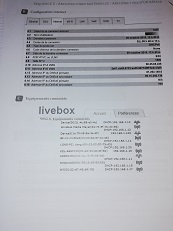

Présentation des activités de NSI
En NSI nous avons toutes sortes d'activités en lien avec notre cours tel que:
.
Nous avons appris au dèbut de l'année à lire un langage binaire et a écrire en binaire.

-Des problème à résoudre sur pyton:
tel que ici ou nous devions a optimiser le placement d'antenne avec un algorithme appelé glouton

Ou encore ici ou nous avons étudier le fonctionnement d'un reseau,le principe d'adresse IP, comment sont structuré les donnés qui voyage au sein d'un réseau qu'il soit local ou public.

-Mais aussi des activités sur linux ou nous nous sommes familiarisé avec le langage linux avec des commandes simples.

-Nous avons aussi vu dernièrement comment creer une page html par groupe de 4 personnes afin de présenter la NSI

Globalement en NSI nous faisons tous types d'activités en lien avec l'informatique, parfois elles sont purement théorique mais la plus part du temp ses activités sont sous forme de problème à résoudre.